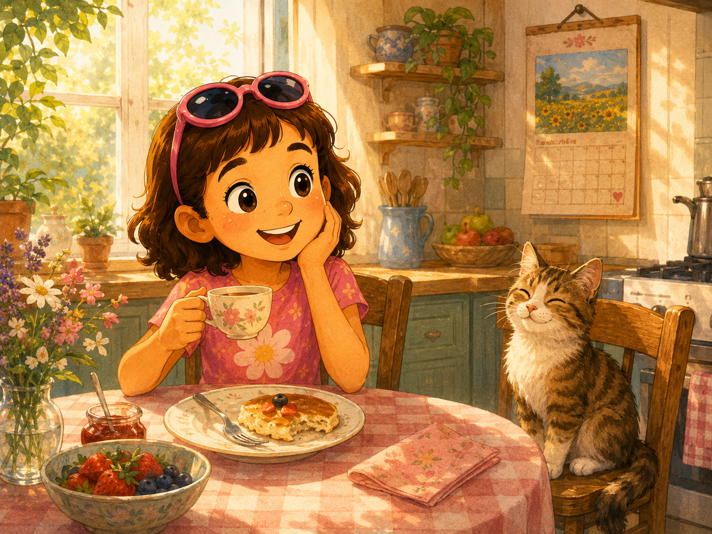
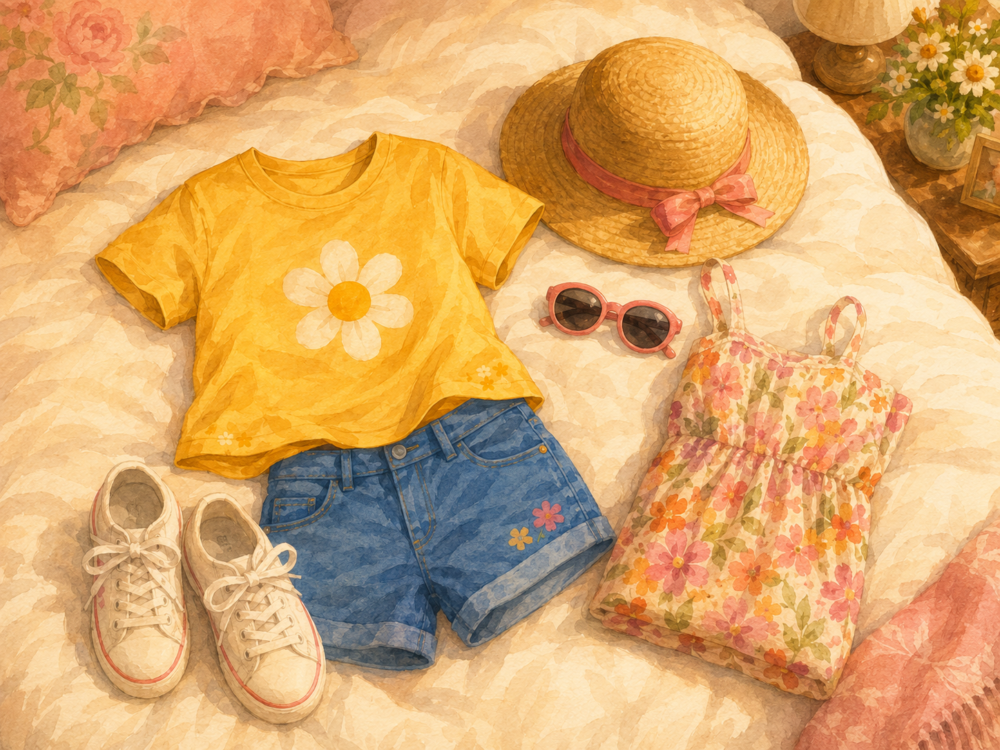
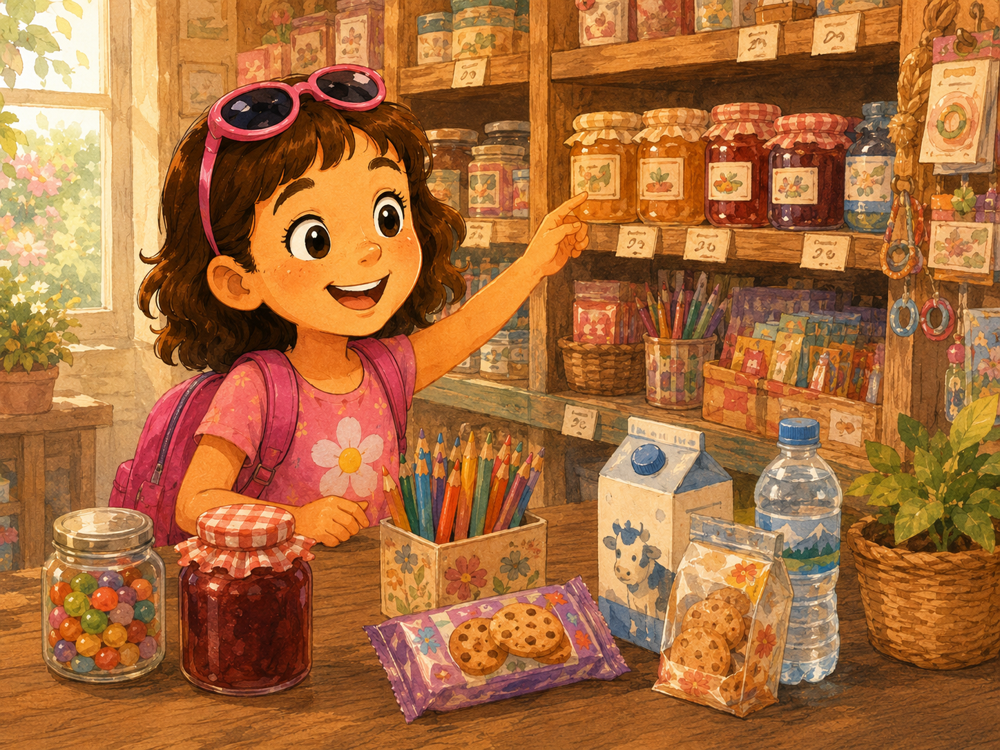
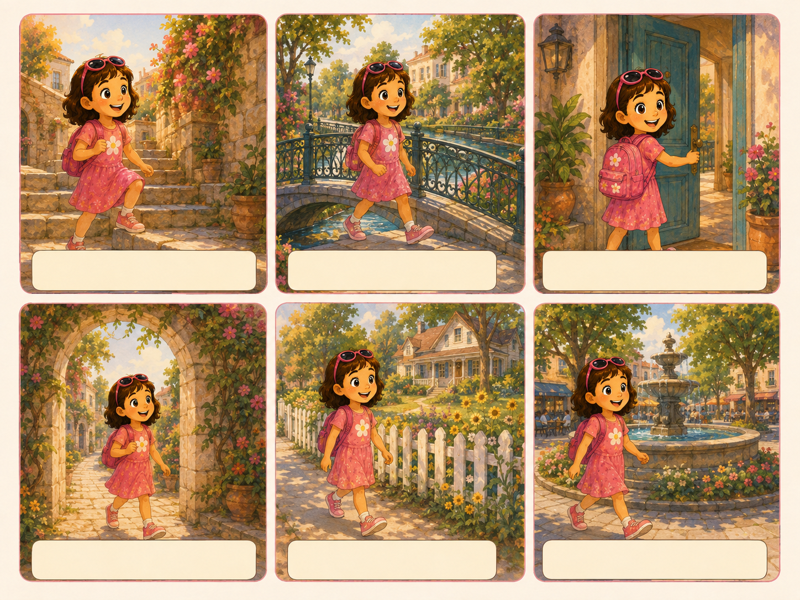
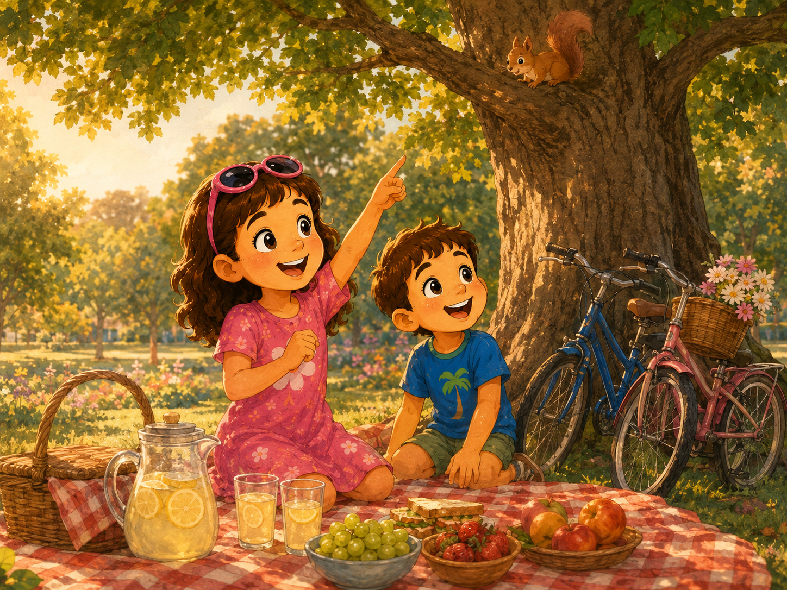
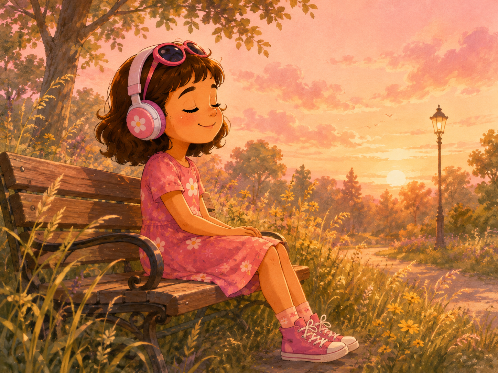
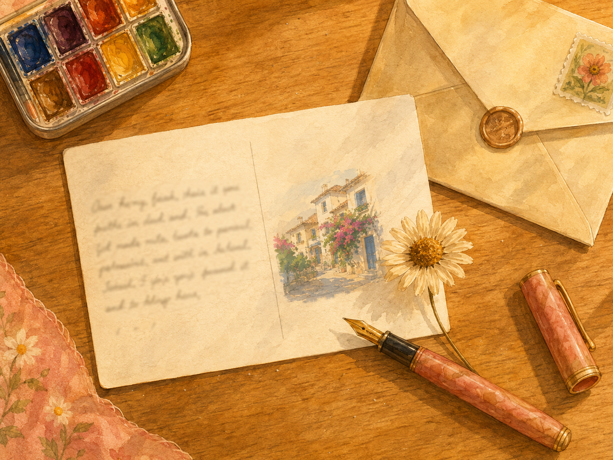

Tap and ask Julia:

📖 Tap any line to hear it · choose the right preposition! 🎯
Julia walks the house at eleven.
She walks her quiet street for five minutes.
Then she goes the road at the traffic lights. 🚦
She walks a little café with pink flowers. ☕
Julia sees a big bookshop the street.
She walks the little hill and looks at the river. 🌊
A little dog runs the pavement in front of her. 🐕
Julia walks the green door into the bookshop. 📚

Julia buys a __ of water. 💧
Mum buys a __ of biscuits. 🍪
Dad buys a __ of jam. 🍓
Julia buys a __ of pencils. ✏️
Mum also buys a __ of milk. 🥛
Julia is at the shop. Choose the polite phrase to hear it:

Tap one word on the left, then its pair on the right.

📝 Choose the right past-tense verb for each gap:
🔹 I / he / she / it → was · you / we / they → were
🔸 in months, seasons, years, morning/evening · 🔸 on days, dates · 🔸 at exact time, night, noon
Tap a word from the pool → then tap the right basket
🎤 Tap each question, then say your answer out loud!

🎧 Tap ▶ and just listen. Don't read! Close your eyes if you want.
/p/ /k/ /f/ /s/ /ʃ/ /tʃ/ → watched, liked, washed, jumped
/b/ /g/ /v/ /z/ /m/ /n/ /l/ /r/ + vowels → played, lived, cleaned, opened
/t/ or /d/PAST = yesterday, last…, …ago · PRESENT = today, now, at the moment, usually, every day
Did + subject + base form? → Did you go? Did she see?didn't + base form → I didn't go. She didn't see.did + went or didn't + saw!

Tell Grandma about your summer. Use Past Simple: went · saw · ate · had · was / were · wore.
Dear Grandma! This summer I went to the park a lot with my family. I wore my yellow T-shirt and my sneakers almost every day. Yesterday we climbed a big tree and saw two little squirrels. In the evening we ate strawberry ice cream. It was the best summer! Love, Julia 💌